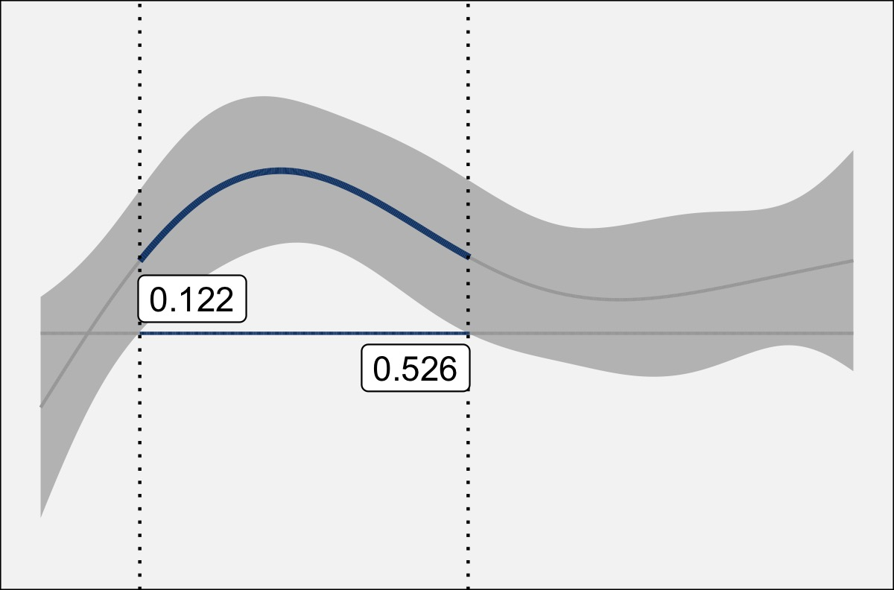

For the fourth time in six years, I presented some of my research at the UGA Linguistics Colloquium. I talked about some findings from my dissertation, though I focused on just the low vowels
Download the slides here
These are relatively old changes
The gist of the talk is that
The interesting part is that while the position of
For me, this opens up a lot of questions about vowel trajectories. I’m curious about what kinds of social conditioning can be found in the trajectory of a vowel, rather than its relative position in the F1-F2 space. In fact, I’ve got some experimental work in motion to answer just that…
Interpreting Difference Smooths
One thing I included in this presentation is an animation to help learn how to interpret difference smooths.I’ve been meaning to include this animation in a presentation for a bit now, and with the 40 minute afforded me in this presentation, I finally had the time to do so. Difference smooths are a type of plot that aid in the interpretation of GAMs and you can learn more about them in Mártin Sóskuthy’s tutorial on GAMs. Unfortunately for those of us that fit GAMs to vowel formant data, they look awfully like vowel formant curves, so they can be tricky to interpret. I’ll probably expand this into a full blog post later on, but for now, here’s a brief explanation of (my interpretation of) difference smooths.
Let’s say we have some data, a blue curve and a red curve, sampled at 11 time points. Here, these 11 data points are plotted, with lines connecting the dots.
When you fit a generalized additive model to this data, you can get two fit lines (left, below), which is basically a smoothed version of the jagged line above. It’s as if you had sampled continuously rather than at 11 discrete timepoints. When you plot a difference smooth, you get the plot on the right (below), which is essentially one curve “minus” the other curve.
Now, it may not be completely transparent how the difference smooth relates to the two fit lines. So, to help out, the two plots below show the exact same curves, only several vertical lines have been added. On the fit lines, the vertical lines connect the two curves, with the height (and color) of the line representing the distance between them. On the right, the vertical lines connect the difference smooth and a horizontal line. The kicker: the height of the vertical lines in both plots is identical.
If you’re like me, it still might not be clear how they connect. The following animation may help. It starts with the two curves with the vertical lines between them. Since I’m getting the difference between the two, I’m “subtracting” the bottom from the top. This has the effect of flattening out the bottom one to a perfectly straight, horizontal line. In order to keep the vertical lines the same height, the amount of “bend” that has to happen to the bottom line has to apply equally to the top line. The result is a new curve called the difference smooth.
Once you’ve grasped that, you can then add some additional information to the plot. Typically, difference smooths come with confidence intervals, which I highlight in gray below. Wherever the confidence interval does not overlap with the horizontal (zero) line, the curves are interpreted as being statistically significantly different from each other.
In this case, since the original red line is subtracted from the original blue one, with the confidence intervals on this difference smooth, I can say that the blue line is significantly higher than the red for some region.
Finally, the plot below is the version of the difference smooths I use in this presentation, my dissertation, and anywhere else I’ve needed them so far.

I’ve just added some additional annotation to better highlight the region of statistical significance:
The center line is blue and slightly thicker in contrast with the gray, thinner lines.
The horizontal axis is blue in the region of statistical significance.
At the point where the confidence interval intersects 0 (the horizontal axis), I’ve added vertical dotted lines.
I’ve also added the timepoint where that intersection happens. In this case, the time spans from 0 to 1, so these two lines are statistically significantly different from one another between 0.122s and 0.526s. NOTE: It’s important that you take these ranges with a grain of salt and perhaps interpret them very broadly rather than paying too much attention to the exact number.
I just kinda like the look of this style of plot, so that’s the one I’ve been using.
Conclusion
I’ve at least benefited from interpreting difference smooths in this way. Hopefully the attendees of my talk today (and now you!) will have slightly better understanding of them as well.